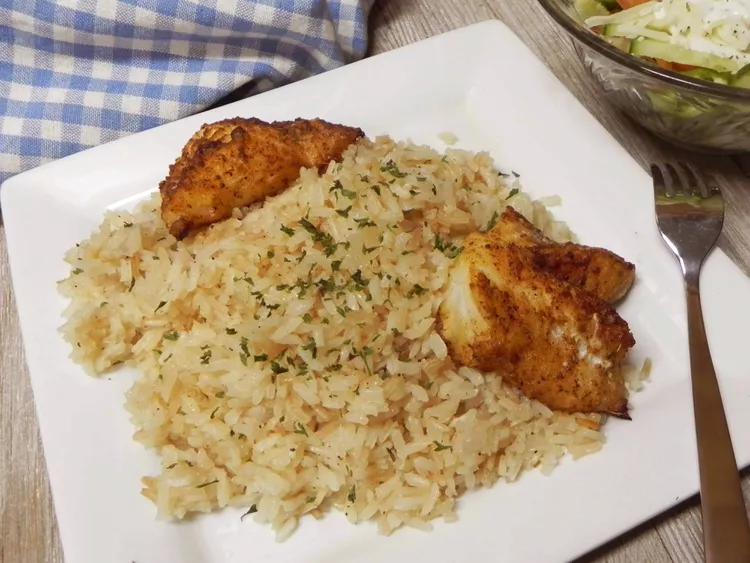

Home
Nihari
Pilaf Recipe
Pilaf Recipe

Description:
Pilaf (also known as pilau or pulao) is an ancient method and resulting dish where grains like rice are toasted in fat (like butter or oil), then simmered in a seasoned broth with aromatics. This specific technique results in fluffy, distinct grains that do not stick together.
Ingredients:
-
2 tablespoons butter
-
1 medium onion, chopped
-
1 cup uncooked white rice
-
2 cups chicken broth
-
1 teaspoon salt
Steps:
-
Preheat the oven to 375 degrees F (190 degrees C). Grease a 1-quart baking dish.
-
Melt butter in a large skillet over medium-high heat. Add onion and sauté until translucent, 3 to 5 minutes. Stir in rice and cook until slightly golden, 2 to 3 minutes. Pour in chicken broth, season with salt, and simmer for 5 minutes. Transfer to the prepared baking dish.
-
Bake in the preheated oven until the broth is completely absorbed, 35 to 40 minutes. Fluff with a fork to serve.